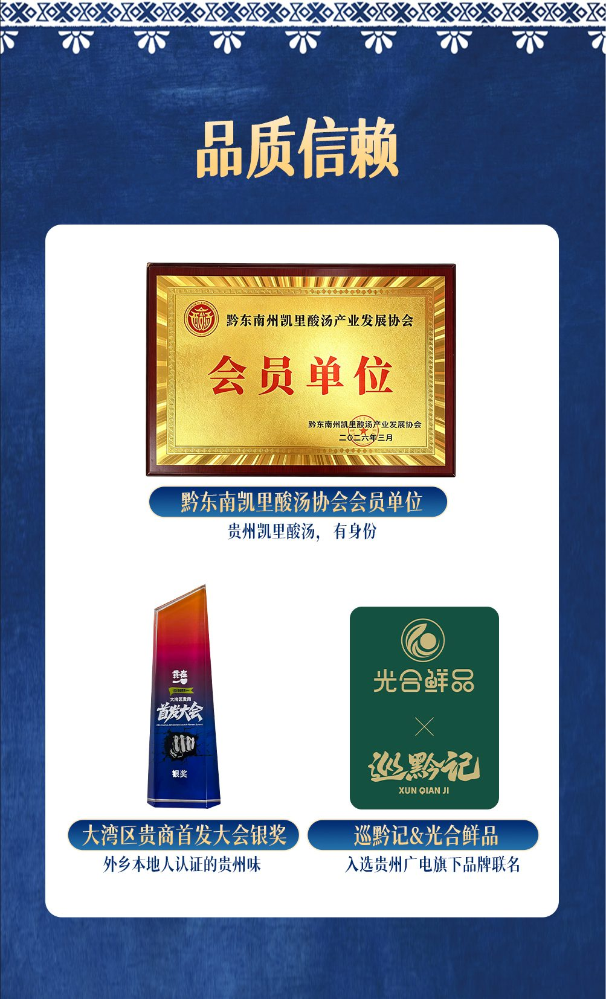
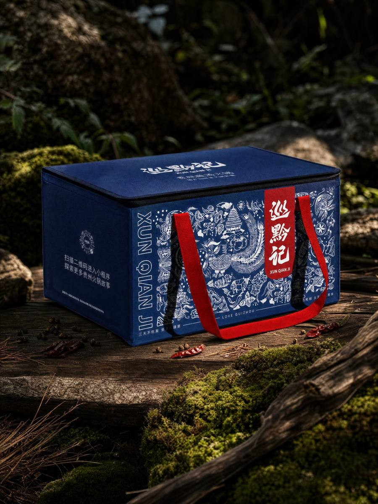

ABOUT XUN QIAN JI
一个跑遍中国的人，
为什么被贵州留住了？
巡黔记的起点不是“先想一个产品，再找一个产地”，而是在长期走访中国各地后，对贵州地域风味产生持续兴趣：发酵的酸、山野香料、多民族饮食、密集而丰富的火锅类型，共同形成了这个品牌的方向。
FOUNDER STORY
从走遍各地，到决定长期寻找贵州味
品牌创始人的公开故事中提到，过去十余年从事企业战略咨询工作，曾走访中国数百个县市、体验不同地域饮食。贵州带来的冲击并不只是一道菜，而是酸、辣、发酵、木姜子、折耳根、山野物产与多民族生活方式共同构成的饮食系统。
在走访中，他逐渐意识到：外界对贵州美食的认知远低于贵州真实的味觉丰富度。酸汤鱼之外，还有豆米火锅、辣子鸡火锅、地摊火锅、夺夺粉、软哨、灰树花、黄牛肉等大量地方风味。
“那些散落在群山褶皱里的饮食基因，不该只深藏于贵州高原。”
巡黔记由此把“寻找、记录、现代转化”作为品牌工作的核心逻辑。
THE NAME
“巡黔记”三个字是什么意思？
持续探索
不是坐在办公室定义贵州味，而是持续走进产地、城市与县域寻找真实的食材、工艺和吃法。
只指向贵州
“黔”是贵州简称，明确品牌的地域边界：以贵州美食为根，而非泛地域风味品牌。
记录与传承
把风味背后的地域、食材与饮食文化记录下来，再通过产品和内容让更多人理解。
BRAND SYSTEM
定位、使命、愿景与价值观
定位
贵州原产地美食文化复兴者。通过系统挖掘与现代转化，让贵州美食以更容易抵达消费者的方式重新被看见。
使命
吃遍贵州 88 个县。它既是寻味目标，也是产品开发路线图。
愿景
让世界爱上贵州美食。希望贵州风味从旅行体验变成更多人的日常选择。
阶段口号
吃遍大地神州，火锅还看贵州。当前阶段以火锅为进入全国市场的重要切口。
STRATEGY
为什么先从火锅开始？
巡黔记的长期产品边界是“贵州美食生态”，但第一阶段选择火锅作为聚焦品类。品牌判断，火锅认知度高、社交属性强，也最适合把底料、蘸水、肉类、菌菇、主食等组合成完整套餐。
更重要的是，贵州火锅本身就是一个矩阵：酸汤、豆米、夺夺粉、辣子鸡、地摊等味型可以持续延展。第一阶段通过火锅建立产品、供应链和品牌基础，再向更广的贵州地域美食拓展。
PUBLIC MILESTONES
从成立到进入贵州本土产业与渠道体系
首发大会银奖
在大湾区贵商首发大会发布凯里酸汤火锅，并在跨行业产品力展示中获得银奖。
协会会员单位
加入黔东南州凯里酸汤产业发展协会，进入酸汤产业组织体系。
贵州本土渠道联名
与贵州广电集团旗下家有购物集团推进合作，推出“光合鲜品&巡黔记”联名产品。

